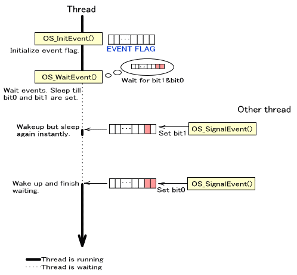

スレッドの同期方法の一つにイベントによる制御があります。
イベントはイベント構造体に対して与える情報で、SDKに用意された関数を呼び出すことでイベントを発生させてイベント待ちで停止しているスレッドに対してシグナルすることが出来ます。待っていたスレッドは指定の条件に合致すれば待機状態から動作可能状態へスレッド状態を変化させます。

イベント構造体は OSEvent 型のデータで、以下のメンバが存在します。
| メンバ名 | 型 | 用途 |
|---|---|---|
flag |
u32 |
イベントフラグ。与えられたイベントのフラグを格納する。 |
queue |
OSThreadQueue |
スレッドキュー。スレッドを待機させたり起動するために使用される。 |
スレッドをイベント待ちさせる前に、構造体の初期化を行う必要があります。
初期化関数は OS_InitEvent() です。
OS_InitEvent( &event );
イベントを待つには、 OS_InitEvent() で初期化したイベント構造体を指定して OS_WaitEvent() を呼び出してください。
OS_WaitEvent() の引数で、イベント待ちの終了条件を指定することが出来ます。指定はビットのパターン
pattern と、モード mode を指定します。モードによって、イベントフラグがビットパターンのビット全てが 1 となったときか、イベントフラグがビットパターンのいずれかのビットが 1 となったときに待ち終了となります。
| mode の値 | 終了条件 |
|---|---|
OS_EVENT_MODE_AND |
すべてのビットが 1 となったときに待ちを終了 |
OS_EVENT_MODE_OR |
いずれかのビットが 1 となったときに待ちを終了 |
指定の条件を満たすまでこの関数を呼び出したスレッドは待機状態となります。正確には、条件が満たされているかを調べるために短時間起きることがありますが、条件が満たされていなければすぐに待機状態となります。つまり、この関数を呼び出しすと他のスレッドに処理が切り替わる可能性があります。
条件を満たしたときにイベントフラグをクリアしたい場合は OS_WaitEventEx() を使用してください。
返り値は条件を満たしたときのイベントフラグの値となります。OS_WaitEventEx() でイベントフラグをクリアする指定をしていた場合は、クリアする前のフラグ値を返します。
OS_WaitEvent( &event, pattern, mode );
OS_WaitEventEx( &event, pattern, mode, clearBit );
すでに終了条件を満たしていた場合はスレッド関数を呼び出すことなく即座に戻ります。
イベントフラグをセットして、待機状態のスレッドにシグナルするには OS_SignalEvent() を呼び出してください。
OS_SignalEvent( &event, setBit );
内部では、イベントをセットした後にイベント構造体内部のスレッドキューを用いてスケジューリングしなおします。この関数を呼び出しすと他のスレッドに処理が切り替わる可能性があります。
イベント構造体のイベントフラグの特定のビットをクリアする場合、OS_ClearEvent() を呼んでください。すべてのビットをクリアする場合は OS_ClearAllEvent() を呼んでください。
OS_ClearEvent( &event, clearBit );
OS_ClearAllEvent( &event )
この関数によってスレッドが切り替わることはありません。
通常は OS_WaitEvent() でスレッド関数によってイベント待ちを行いますが、自らが条件を満たしているかどうかを
OS_PollEvent() でポーリングすることも可能です。
OS_PollEvent( &event, pattern, mode );
OS_PollEventEx( &event, pattern, mode, clearBit );
待ちの終了条件は、OS_WaitEvent*() と同じです。
返り値が 非0 の値であれば条件を満たしていたということになり、その値はイベントフラグの値となります。返り値が
0 の場合は条件を満たしていないという意味になります。
OS_PollEventEx() では、OS_WaitEventEx() 同様、条件を満たしていた場合にクリアフラグで指定のビットをクリアすることが可能です。
イベント待ちをするスレッドと、スレッド1、スレッド2があり、イベント待ちをするスレッドは、スレッド1の MY_EVENT1 と、スレッド2 の MY_EVENT2 がシグナルされるのを待つ場合を考えます。両方されるまで待ち続けます。
OSEvent event;
#define MY_EVENT1 0x00000001
#define MY_EVENT2 0x00000002
#define MY_EVENT (MY_EVENT1 | MY_EVENT2)
//-------- イベント待ちをするスレッド
func()
{
OS_InitEvent( &event );
：
(void)OS_WaitEvent( &event, MY_EVENT, OS_EVENT_MODE_AND );
OS_Printf( "signaled EVENT1 and EVENT2\n" );
：
}
//-------- スレッド1
thread1()
{
：
OS_SignalEvent( &event, MY_EVENT1 );
：
}
//-------- スレッド2
thread2()
{
：
OS_SignalEvent( &event, MY_EVENT2 );
：
}
上の例はMY_EVENT1 と MY_EVENT2 の両方がシグナルされるのを待ちましたが、どちらか一方がシグナルされるまで待ち続ける場合は下のように一箇所だけを変更します。
//上の例の、func()の一部を以下のように変更
(void)OS_WaitEvent( &event, MY_EVENT, OS_EVENT_MODE_OR );
OS_Printf( "signaled EVENT1 or EVENT2\n" );
イベント待ちをするスレッドと、定期的に MY_EVENT1 をシグナルするスレッド1があります。イベント待ちスレッドは MY_EVENT1 がシグナルされる度に起動され、処理が終わるとまたイベント待ちをして停止状態になります。
OSEvent event;
#define MY_EVENT1 0x00000001
//-------- イベント待ちをするスレッド
func()
{
OS_InitEvent( &event );
：
while(1)
{
(void)OS_WaitEventEx( &event, MY_EVENT1,
OS_EVENT_MODE_AND,
MY_EVENT1);
OS_Printf( "signaled EVENT1\n" );
}
：
}
//-------- スレッド1
thread1()
{
：
OS_SignalEvent( &event, MY_EVENT1 );
：
OS_SignalEvent( &event, MY_EVENT1 );
：
}
この例では、OS_WaitEventEx() を用いてイベント終了時に MY_EVENT1 をクリアしています。これは再びイベントを受け取るためです。
もしこれを OS_WaitEvent() を用いてイベント待ちし、終了後に自分で flag をクリアするようにしたら、OS_WaitEvent() の終了と flag クリアの間に割り込みが入ってそこで次の MY_EVENT1 がシグナルされていた場合にそれを拾うことが出来ません。( 一連の流れを割込み禁止状態で囲めば大丈夫ですが、それは OS_WaitEventEx() を用いるのと変わりません。)
//func()を以下のように変更すると、イベントを取りこぼすことがある。
func()
{
OS_InitEvent( &event );
：
while(1)
{
(void)OS_WaitEvent( &event, MY_EVENT1,
OS_EVENT_MODE_AND );
// ここでイベントが発生した場合
// 下の行ですぐにクリアされてしまう。
event->flag = 0;
OS_Printf( "signaled EVENT1\n" );
}
：
}
OS_InitEvent, OS_WaitEvent*, OS_SignalEvent, OS_Clear*Event, OS_PollEvent*
2007/12/04 初版